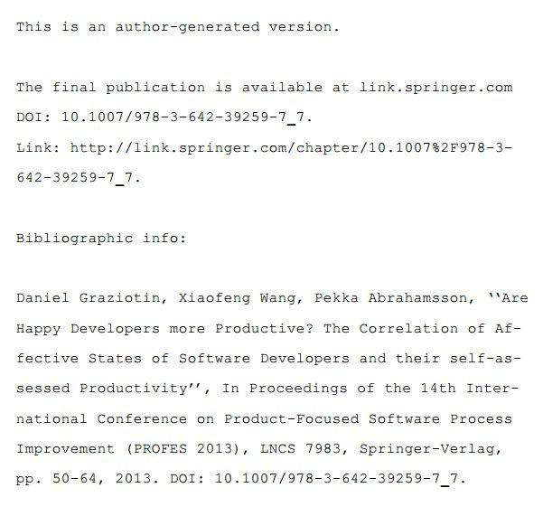

Can I self-archive my e-print?
Let's find out. Search by publication name, publisher name , or ISSN
Preprint
You
are allowed
to publish your pre-referee (before peer-review) version of your paper on your website, on an institutional archive, and probably on public repositories like arXiv, figshare, and PeerJ PrePrints.
You
may be allowed
to publish your pre-referee (before peer-review) version of your paper on your website, on an institutional archive, and on public repositories like arXiv, figshare, and PeerJ PrePrints.
You
are not allowed
to publish your pre-referee (before peer-review) version of your paper on your website, on an institutional archive, and on public repositories like arXiv, figshare, and PeerJ PrePrints.
It is
unclear
if you can publish your pre-referee (before peer-review) version of your paper on your website, on an institutional archive, and on public repositories like arXiv, figshare, and PeerJ PrePrints.
It is
unknown
if you can publish your pre-referee (before peer-review) version of your paper on your website, on an institutional archive, and on public repositories like arXiv, figshare, and PeerJ PrePrints.
Postprint
You
are allowed
to publish your post-referee (after peer-review and/or editorial acceptance) version of your paper on your website, on an institutional archive, and probably on public repositories like arXiv, figshare, and PeerJ PrePrints.
You
may be allowed
to publish your post-referee (after peer-review and/or editorial acceptance) version of your paper on your website, on an institutional archive, and on public repositories like arXiv, figshare, and PeerJ PrePrints.
You
are not allowed
to publish your post-referee (after peer-review and/or editorial acceptance) version of your paper on your website, on an institutional archive, and on public repositories like arXiv, figshare, and PeerJ PrePrints.
It is
unclear
if you can publish your post-referee (after peer-review and/or editorial acceptance) version of your paper on your website, on an institutional archive, and on public repositories like arXiv, figshare, and PeerJ PrePrints.
It is
unknown
if you can publish your post-referee (after peer-review and/or editorial acceptance) version of your paper on your website, on an institutional archive, and on public repositories like arXiv, figshare, and PeerJ PrePrints.
Publisher PDF
You
are allowed
to publish the publisher PDF (the published article) of your paper on your website, on an institutional archive, and probably on public repositories like arXiv, figshare, and PeerJ PrePrints.
You
may be allowed
to publish the publisher PDF (the published article) of your paper on your website, on an institutional archive, and on public repositories like arXiv, figshare, and PeerJ PrePrints.
You
are not allowed
to publish the publisher PDF (the published article) of your paper on your website, on an institutional archive, and on public repositories like arXiv, figshare, and PeerJ PrePrints.
It is
unclear
if you can publish the publisher PDF (the published article) of your paper on your website, on an institutional archive, and on public repositories like arXiv, figshare, and PeerJ PrePrints.
It is
unknown
if you can publish the publisher PDF (the published article) of your paper on your website, on an institutional archive, and on public repositories like arXiv, figshare, and PeerJ PrePrints.
Under the following conditions
Further information
Disclaimer
The purpose of rchive.it is to find a human readable summary of a summary provided by SHERPA/RoMEO of permissions that are normally given as part of each publisher's copyright transfer agreement.
This summary of a summary is for the journal's default policies, and changes or exceptions can often be negotiated by authors.
All information is correct to the best of the knowledge of SHERPA/RoMEO but both their and rchive.it authors should not be relied upon for legal advice.
Why self-archiving a paper?
Did you know that the most prominent publishers in Computer Science fields (Software Engineering and Information Systems in particular) - including ACM, IEEE, INFORMS, Elsevier, ME Sharpe, Palgrave Macmillan, Springer Verlag, John Wiley and Sons [1] - let you deposit at least your preprint on your personal website and/or on an institutional repository?
Even if you are not researching in these fields, did you know that roughly 90% of all the scientific publishers [2] let you post your version of the research article on your website and/or on third party repositories like arXiv, figshare, and PeerJ PrePrints?
Now you know that.
Why aren't you self-archiving your research articles? There are huge benefits. One of them is that your article will reach a significantly greater audience compared to not doing so [3]. This implies also that your research article will significantly gain in number of citations [4][5].
Keep reading this page, or see this presentation for more.
Just think about how much this would help practitioners, as individual access to a research article has high costs. Research would benefit as well. It happens to me all the time, it happens to you as well. It does not necessarily have to be an article from a field outside from the scopes of a university. We should not take for granted that other institutions possess the same access level that our institution has got.
Self-archiving would solve this. Suppose I am looking for the happiness of software developers and the correlation with their productivity. Google Scholar has few results but one of them seems interesting for my research scopes.
However, when I try to access it, I get hit by a paywall. Same old story. The situation gets worse if I engage in a multidisciplinary research. My institution does not have the resources to subscribe to any existing journal in the world.

However, if one of the authors invests 5 minutes of his/her time to upload the preprint somewhere, Google Scholar (and other systems) will reach it, and serve it to whoever finds the article. See the blue rectangle in the first picture? It is a direct link to the PDF preprint of that article.
Other people will directly find the preprint instead of the original article.
The results:
The article is accessed, barrier free. This practice is often called green Open Access. I can read the paper, acquire new knowledge for my own research purposes, and cite it. How would I cite it? By following the instructions left by the authors.

See? Nobody gets hurt. You do not necessarily have to be an adopter of Gold Open Access journals, if you are "concerned about your career and your prestige". You should not be, by the way.
However, if you want to keep publishing in your usual subscription-based journals, at least self-archive your paper. Use rchive.it to verify to which extent this is permitted.
There are no excuses.
This is a win-win situation. Just self-archive your research. Now.
About
rchiveit is a Web applications, which is nothing else than a wrapper for SHERPA/RoMEO service. Indeed, it uses SHERPA/RoMEO API.
rchiveit was developed as a response to the rarely employed practice of self-archiving research articles [2]. Researchers are misinformed on their rights when they submit a research paper to a journal or a conference. While SHERPA/RoMEO does a great, extensive job in collecting and organizing the publishers' copyright and self-archiving policies, its interface is outdated and the provided information are too much for non-technical people. Most still don't know what Open Access is, especially in the field of Computer Science.
rchiveit provides a fresher (still improvable) user interface and only the strictly important information needed by the researcher. Just a symbol near the words preprint, postprint, and publisher PDF, followed by a single paragraph of explanations.
rchiveit is Open-Source software, available on GitHub and released under the BSD 3-Clause License.
Contribute
There are several ways to contribute to rchiveit.
Report Issues
Head to the issue tracker, tweet it @dgraziotin, or drop me a mail: graziotin AT inf DOT unibz DOT it
Fix Issues
Head to rchiveit GitHub page, clone and pull!
Suggest Enhancements
Head to the issue tracker, tweet it @dgraziotin, or drop me a mail: graziotin AT inf DOT unibz DOT it
Provide Enhancements
Head to rchiveit GitHub page, clone and pull!
rchiveit welcomes all kind of contributions. Are you a frontend/JS developer? A backend/PHP coder? A UX expert? A graphics designer? An advocate of Open Access? A native English speaker? You are welcome.
So far, rchiveit needs:
- Bug Fixes
- Performance enhancements
- Proof-read
- Section (text) rewriting
- Graphics and layout enhancements
- Usability enhancements
References
- Graziotin D, Wang X, Abrahamsson P (2013) A Framework for Systematic Analysis of Open Access Journals and its Application in Software Engineering and Information Systems. Scientometrics Online First (April 2014): 1-37. arXiv:1308.2597 [cs.DL]. DOI: 10.1007/s11192-014-1278-7.
- Harnad S, Brody T, Vallières F, Carr L, Hitchcock S, Gingras Y, Oppenheim C, Hajjem Chawki, Hilf ER (2008) The Access/Impact Problem and the Green and Gold Roads to Open Access: An Update. Serials Review 34(1): 36-40. DOI:10.1016/j.serrev.2007.12.005.
- Harnad S, Brody T (2004) Comparing the Impact of Open Access (OA) vs. Non-OA Articles in the Same Journals. DLib Magazine 10: 2–6. DOI: 10.1045/june2004-harnad
- Eysenbach G (2006) Citation Advantage of Open Access Articles. PLoS Biol 4(5): e157. DOI:10.1371/journal.pbio.0040157
- Gargouri Y, Hajjem C, Larivière V, Gingras Y, Carr L, et al. (2010) Self-Selected or Mandated, Open Access Increases Citation Impact for Higher Quality Research. PLoS ONE 5(10): e13636. doi:10.1371/journal.pone.0013636